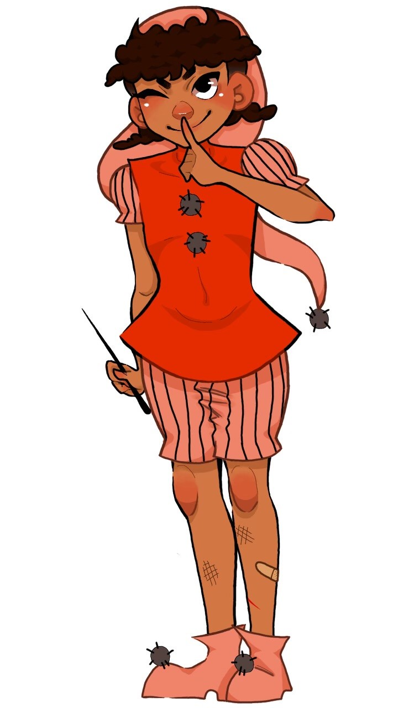
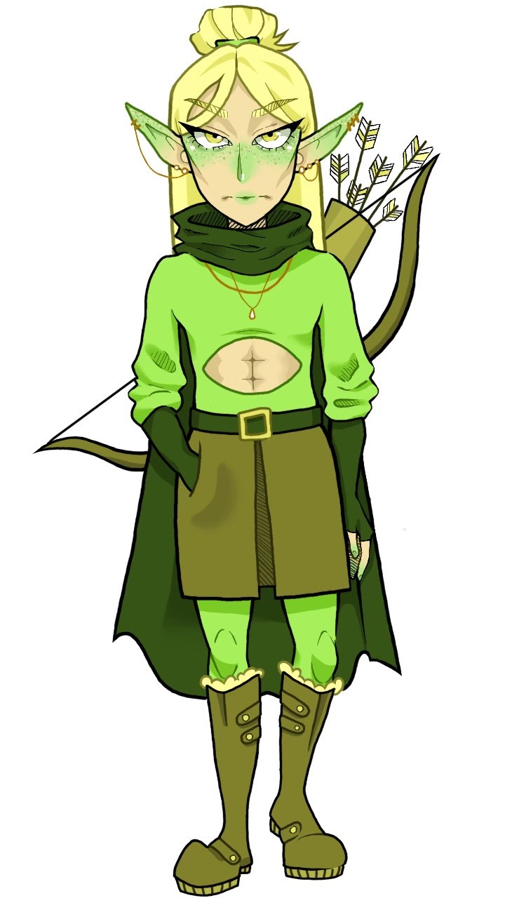
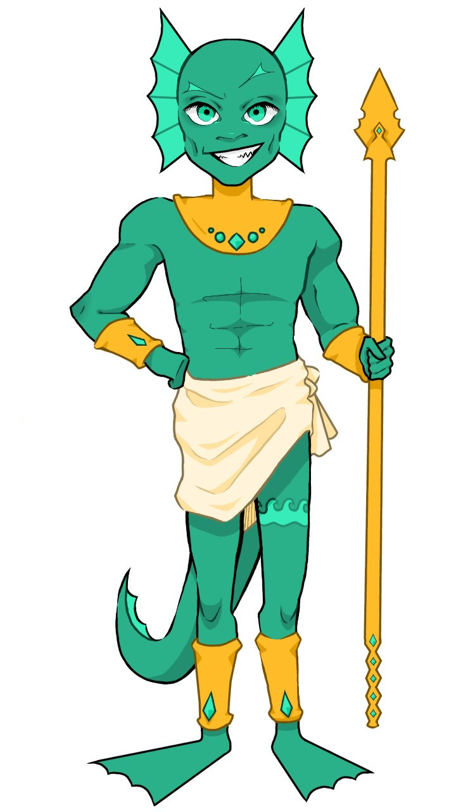

Character design is one of my favorite art forms
no matter what medium I'm using. For these particular
designs I used Adobe Photoshup. These characters
are meant to exist in a fantasy-themed racing board
game concept that I have been working on. Below is
a list of their names and in-game abilities.



Peppy the Wizard
- Non-magic users aren't sure why, but the
odds always seem to be in his favor. Odd dice rolls are
doubled.
Aimar the Elven
- Competitors watch their backs when he's around.
Long-range attack abilities.
Tridon the Water Nymph
- The fastest swimmer in all the lands.
Skips over water spaces.